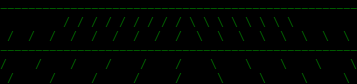
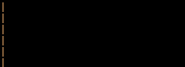
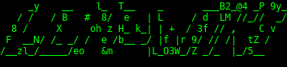

FIGlet banners for terminals, docs, comments, SVG, and web media
ascii-banner
Generate readable terminal banners with 328 bundled fonts, ANSI colors, borders, source-code comments, vector SVG, and canned ASCII animations that export to GIF, WebP, MP4, and WebM.
ascii-banner -f Slant -c green --animate laser --duration 1.8 --fps 12 --seed 21 --loop 0 --export ascii-banner-laser.gif "ascii-banner"Start Here
brew install nvk/tap/ascii-banner
ascii-banner -f Slant -c green --border rounded "Deploy"
pip install "ascii-banner[media]"
ascii-banner --animate matrix --seed 21 --loop 0 --export launch.gif "Launch" ____ __
/ __ \___ ____ / /___ __ __
/ / / / _ \/ __ \/ / __ \/ / / /
/ /_/ / __/ /_/ / / /_/ / /_/ /
/_____/\___/ .___/_/\____/\__, /
/_/ /____/What It Does
328 fonts
Browse by tag, size, and legibility; fuzzy matching handles common typos.
Terminal styling
Named colors, hex colors, rainbow, gradients, borders, width, and justification.
Source comments
Wrap banners for Python, JS, C, CSS, HTML, SQL, shell, Rust, Go, and more.
SVG and media
Export vector SVG or animated GIF, WebP, MP4, and WebM assets for the web.
Generated Media

ascii-banner -f Slant -c green --animate synthgrid --loop 0 --export llm-wiki-synthgrid.gif "LLM-WIKI"

ascii-banner -f Slant -c orange --animate laser --loop 0 --export bitcoin-laser.gif "Bitcoin"

ascii-banner -f Slant -c green --animate glitch --intensity 0.35 --loop 0 --export llm-wiki-glitch.gif "LLM-WIKI"
More by nvk
llm-wiki.net
LLM Wiki is a research and knowledge-base system for collecting sources, tracking provenance, and compiling LLM-readable project docs.
learntoprompt.org
Learn to Prompt is a practical prompt engineering guide for writing clearer instructions and building better language-model workflows.
Full Guide
The guide covers every flag, all animation effects, static examples, every bundled font, export formats, recipes, and troubleshooting.